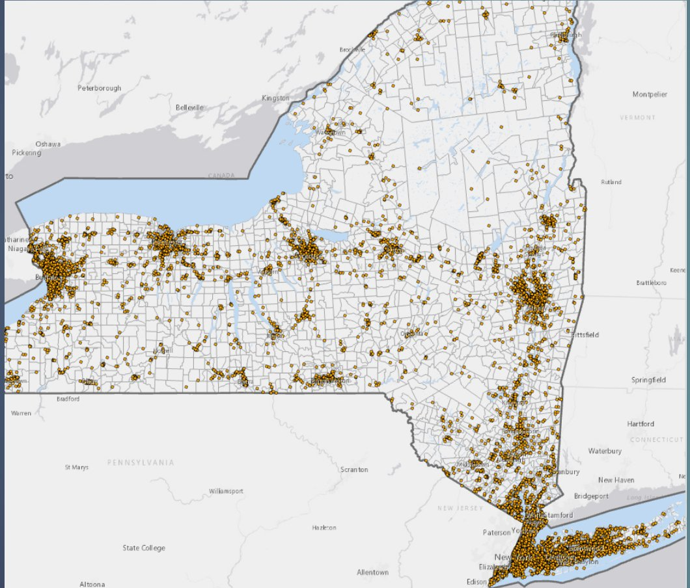
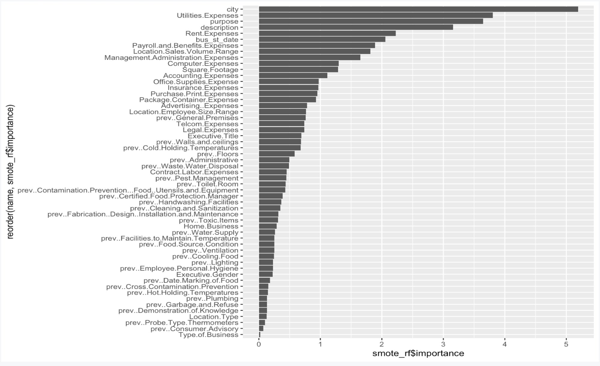
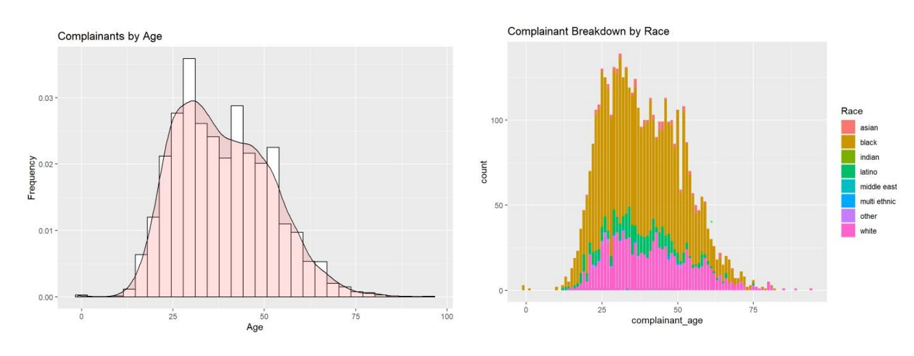
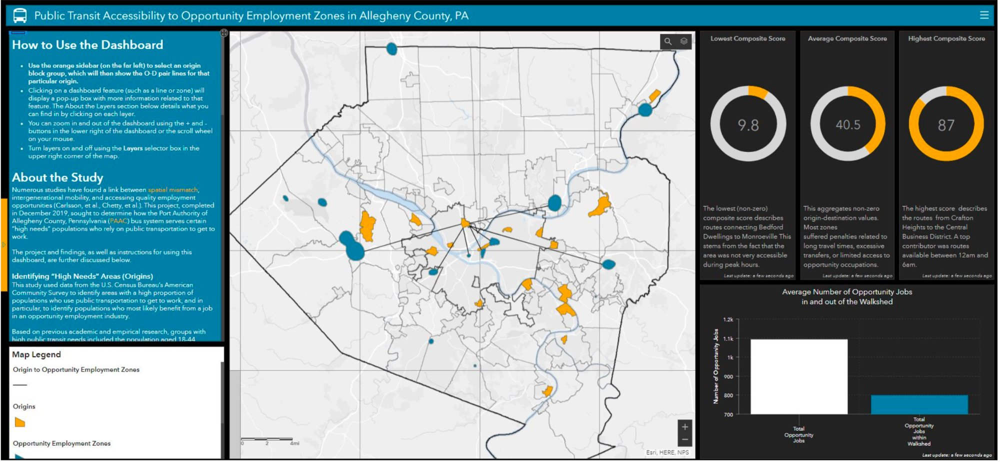
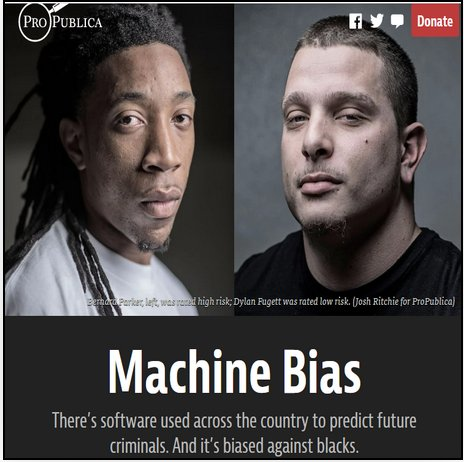
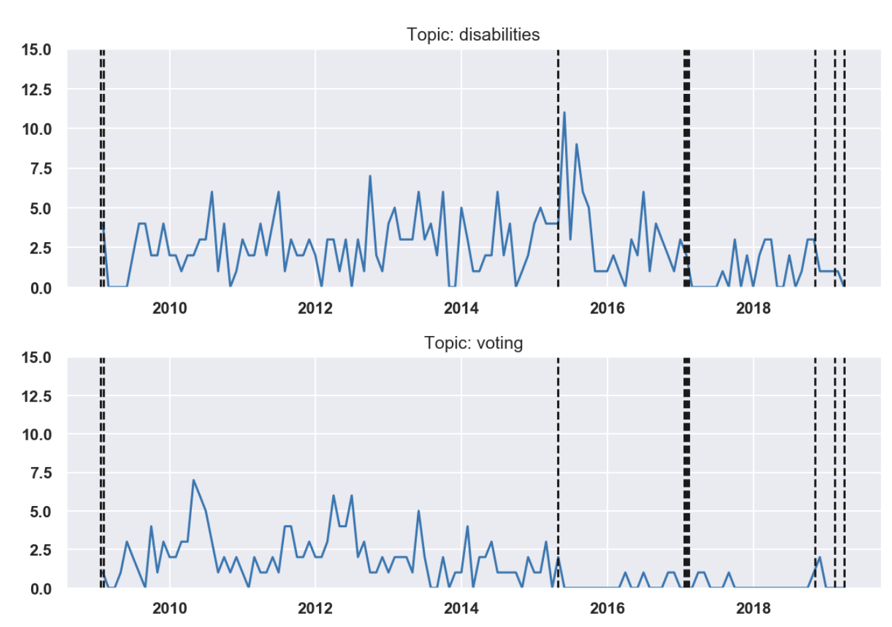

Data Scientist & Creative Storyteller
Turning data into stories people actually understand.
Policy-savvy creator and technologist specializing in advanced analytics methods and futures thinking. I build dashboards, models, and decision strategies that make complex information feel intuitive. Open to part-time and consulting work.
Hi! I'm Kaila Gilbert — a technologist, data scientist, and multi-genre writer who believes wholeheartedly in the power of people. Whether I'm analyzing our current world or dreaming up brighter ones, I bring curiosity, depth, and analytical expertise to all that I do.
As a graduate student in Data Science, I cultivated a deep love for data mining and the craft of visualization — the idea that a well-told story with engaging visuals can communicate what a thousand rows of data cannot. I was honored to spend five years at IBM, bringing the cutting-edge of AI and data analytics to Federal clients and civilian institutions. Before IBM, I gained experience with startups, nonprofits, and Fortune 50 companies.
My graduate work spanned geospatial analysis, AI/ML, statistical modeling, and policy studies. I also hold a B.S. in Human and Organizational Development, a foundation that puts people and strategy at the heart of all I do. Outside of work, you'll find me reading, travelling, playing D&D, and applying my technical skills to delicious recipes.
I'm currently open to part-time and consulting opportunities in data science, analytics, and creative storytelling. If you have a dataset that needs to tell a story, let's make it happen.
How do you protect public health and voter rights at the same time? Our team partnered with the nonprofit Voter Protection Corps and CMU professor Rayid Ghani to examine poll closures, voting behavior, and election resource gaps across the U.S. during COVID-19. We gathered and analyzed data from over 35,000 polling places alongside public census and survey sources.
Together, we created a Voter Resource Prioritization Toolkit identifying counties with critical gaps between in-person voting demand and available resources — factoring in polling machine access, poll worker shortages, and historically marginalized voter populations. Our findings directly informed Voter Protection Corps' national action plan to preserve in-person voting ahead of the 2020 general election.

New York holds 22% of all large quantity hazardous waste generators in the U.S. — yet regulators can only inspect 3% each year. Working with the EPA and NYS Dept. of Environmental Conservation data, our team built a machine learning pipeline to predict which facilities are most likely to violate compliance rules, helping allocate scarce inspection resources more equitably and effectively.
The Nuts and Bolts? We ran a grid of 282 models (Random Forest, KNN, Logistic Regression, AdaBoost) across 193 features drawn from RCRA, NYSDEC waste reports, and Census ACS data. Our best model achieved ~92% precision at top 3% — far outperforming the current baseline. We also integrated a full fairness audit on disparities across high-poverty zip codes.

Which restaurants and shops are most likely to fail food inspection audits? This project tackled a classic applied ML challenge — limited data and severe class imbalance — to predict food safety inspection failures across Allegheny County, PA. This ML project evaluated how standard classifiers degrade under rare-event conditions and applied SMOTE (Synthetic Minority Oversampling) to rebalance the training data.
Our feature importance analyses revealed that location (city), business expenses, and inspection description were the strongest predictors — outweighing prior violation history.

Civic distrust between citizens and law enforcement is exarcerbated by police misconduct. Our team designed a full data science pipeline — from EDA to modeling to a decision-support dashboard — to help the Philadelphia Mayor's Office identify which police districts could be targeted for intervention and training. We analyzed 1,300–1,800 annual complaints filed with the Philadelphia Police Department between 2015 and 2019.
Our approach utilized k-means clustering, logistic regression, and random forest models to identify high-risk officers and districts. We also conducted spatial hotspot analysis in ArcGIS, revealing Districts 39 and 25 as statistically significant misconduct hotspots at 99% confidence. Recommendations included!

What if the populations in most need of certain jobs are completely unable to reach them by transit? Our team investigated whether the Port Authority of Allegheny County (PAAC) bus system adequately serves "high needs" populations — those who rely on public transit to access opportunity employment. This project first analyzed dmeographic data to identify origins of interest, using ACS data filtered by transit dependency, age, and industry. We pulled raw industry and job vacancy data to ascertain the whereabouts of job opporutnity sites. We built an origin-destination composite accessibility index scoring each transit route.
Composite scores ranged from 9.8 to 87 — penalizing long travel times, excessive transfers, poor regional walkability, and limited off-peak service. Our findings revealed stark spatial mismatches between where transit-dependent workers live and where opportunity jobs are located. Our final outputs were delivered as an interactive ArcGIS dashboard and an Excel accessibility index used by Allegheny County DHS.

What happens when an algorithm used by government officials consistently reveals discrimination in its recommendations? Our team reproduced and extended ProPublica's landmark investigation into COMPAS — a risk assessment tool used across the U.S. criminal justice system to score individuals' likelihood of reoffending. Using the same Broward County dataset, we built competing models (logistic regression, LDA, KNN, decision trees) to predict both general and violent recidivism.
Our models achieved similar sensitivity to COMPAS with meaningfully better specificity — and with substantially more equitable outcomes across race. Key finding: The strongest predictors of recidivism were age, sex, and prior criminal history, not race — yet COMPAS scores diverged sharply by race. Our pruned random forest model performed best for general recidivism, while our LDA model led on violent recidivism.
During a pandemic, how can the public sector ensure efficient distribution of resources to protect public health? Our team designed and solved a mixed-integer optimization model (lots of math!) to strategically site COVID-19 testing Points of Dispense (PODs) across Allegheny County, PA — balancing the cost of opening facilities against the societal cost of travel time and unmet demand. There's a lot of details, but we implemented two formulations: an average-weighted objective and a minimax approach minimizing the worst-case travel distance for any zip code.
To anticipate unexpected events in disease development, we used a SIR model to simulate outbreak demand scenarios across 47 candidate sites, incorporating GIS-derived travel distances, ACS census data, and PA health budget constraints. We ultimately recommended 18 PODs at a cost of ~$1.5M — with 90% weight to societal cost — ensuring equitable geographic coverage with zero unmet demand across all scenarios.

How do DOJ press releases reveal the ultimate priorities and agendas of an administration? Our team used LDA topic modeling and t-SNE clustering on 13,000 Department of Justice press releases (2009–present) to surface the "expressed agendas" of each Attorney General. Our analysis revealed clear partisan shifts — notably, sharp declines in voting rights and disability cases under the last two AGs — with policy recommendations delivered to the House Judiciary Committee.
Have a dataset that needs a story? A dashboard that needs a designer?
I'm available for part-time, freelance, and consulting work in data science, analytics, and visualization. Whether it's a short project or an ongoing collaboration — I'd love to hear about it.